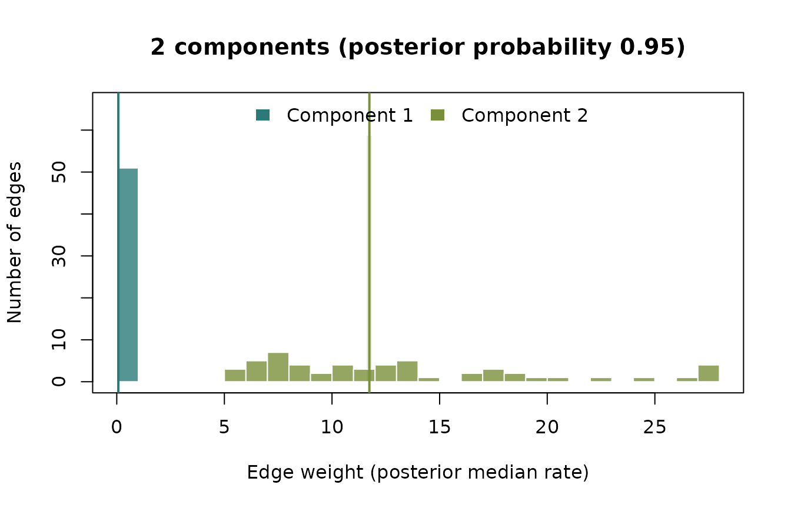

Edge mixture models look for clusters in edge weights, which can be
interpreted as different types of social relationship (for example, weak
and strong associations). A Gaussian mixture model describes the edge
weights as a combination of several normal distributions, called
components. bison_mixture() fits these models to the edge
weights in many posterior draws of the network (each draw is one
possible network that is consistent with the data). It gives two main
results:
- the probability of each number of components (clusters), from 1 to a maximum \(K\), for the whole network;
- for each dyad, the probability that its edge belongs to each component.
library(bisonR)
library(igraph)
#>
#> Attaching package: 'igraph'
#> The following objects are masked from 'package:stats':
#>
#> decompose, spectrum
#> The following object is masked from 'package:base':
#>
#> unionSimulated data
The data are simulated from a count edge model in which each dyad belongs to one of two components with equal probability. The data are aggregated, with one row per dyad:
sim_data <- simulate_bison_model_mixture("count", num_components = 2, component_weights = c(0.5, 0.5))
df <- sim_data$df_sim
head(df)
#> node_1_id node_2_id event effort duration
#> 1 1 2 698 81.01022 81.01022
#> 2 1 3 1706 146.60679 146.60679
#> 3 1 4 21 170.27994 170.27994
#> 4 1 5 6 156.03195 156.03195
#> 5 1 6 1075 90.48502 90.48502
#> 6 1 7 650 46.09167 46.09167There are no observation-level effects, so the conjugate count model can be used. Conjugate models calculate the posterior directly, which is fast, but they cannot include extra effects:
fit_edge <- bison_model(
(event | effort) ~ dyad(node_1_id, node_2_id),
data = df,
model_type = "count_conjugate",
priors = get_default_priors("count_conjugate")
)In a real analysis the edge model should be checked before fitting a
mixture model (see vignette("diagnostics")).
Fitting the mixture model
num_components sets the largest number of components
considered:
fit_mixture <- bison_mixture(fit_edge, num_components = 5, verbose = FALSE)
summary(fit_mixture)
#> === Fitted dyadic mixture model ===
#> Maximum number of components: 5
#> Most probable number of components: 2
#> Posterior probability: 95.1%
#> === Component probabilities ===
#> 1 2 3 4 5
#> P(K=k) 0 0.951 0.049 0 0
#> === Component means (K = 2) ===
#> 1 2
#> median 0.073 11.736
#> === Edge component probabilities (K = 2) ===
#> 1 2
#> 1 <-> 2 0 1
#> 1 <-> 3 0 1
#> 1 <-> 4 1 0
#> 1 <-> 5 1 0
#> 1 <-> 6 0 1
#> 1 <-> 7 0 1
#> ... (99 more rows; see get_edge_component_probabilities())The summary shows the most probable number of components and the probability of each number. For the most probable number, it also shows the posterior median of each component’s mean edge weight and the probability that each edge belongs to each component. Components are numbered in order of their means, so component 1 is always the weakest type of relationship.
The same results can be extracted for further analysis.
get_network_component_probabilities() gives the probability
of each number of components:
get_network_component_probabilities(fit_mixture)
#> num_components probability
#> 1 1 4.538917e-29
#> 2 2 9.509335e-01
#> 3 3 4.906273e-02
#> 4 4 3.778354e-06
#> 5 5 2.880072e-08get_edge_component_probabilities() gives, for a chosen
number of components, the probability that each edge belongs to each
component. Here two components are used, as in the simulation:
head(get_edge_component_probabilities(fit_mixture, 2))
#> node_1 node_2 P(component 1) P(component 2)
#> 1 1 2 0 1
#> 2 1 3 0 1
#> 3 1 4 1 0
#> 4 1 5 1 0
#> 5 1 6 0 1
#> 6 1 7 0 1get_component_means() gives the posterior median and
credible interval of each component’s mean edge weight:
get_component_means(fit_mixture, 2)
#> 50% 5% 95%
#> Component 1 0.07343781 0.06479166 0.08056646
#> Component 2 11.73647180 11.60590011 11.84564248plot_mixture() shows the distribution of posterior
median edge weights, with each edge coloured by its most probable
component, and the posterior median and 90% interval of each component
mean. By default it shows the most probable number of components; here
the two-component model is shown:
plot_mixture(fit_mixture, num_components = 2)
Choosing the information criterion
The probability of each number of components is calculated from an
information criterion, set with criterion, in each
posterior draw of the network, and then averaged across draws. It is an
approximation rather than a full posterior probability. An information
criterion scores how well a model fits the data, with a penalty for each
extra component. The default, "ICL" (integrated completed
likelihood), adds a further penalty for components that overlap, so it
favours fewer, well-separated components. "BIC" (Bayesian
information criterion) does not include this extra penalty and can
support more components when they overlap. Because edge weights are
estimated with uncertainty, components often overlap, so the two
criteria can give different results:
fit_mixture_bic <- bison_mixture(fit_edge, num_components = 5, criterion = "BIC", verbose = FALSE)
get_network_component_probabilities(fit_mixture)
#> num_components probability
#> 1 1 4.538917e-29
#> 2 2 9.509335e-01
#> 3 3 4.906273e-02
#> 4 4 3.778354e-06
#> 5 5 2.880072e-08
get_network_component_probabilities(fit_mixture_bic)
#> num_components probability
#> 1 1 4.293633e-29
#> 2 2 9.297643e-01
#> 3 3 4.552982e-02
#> 4 4 2.430812e-02
#> 5 5 3.977640e-04In this example both criteria give the highest probability to two components, the number used in the simulation. Where the two criteria disagree, the number of components should be interpreted with caution.
Using components in further analyses
Component membership can be used in other analyses. For example, the question might be whether the total strength of an individual’s strong relationships is related to a trait. For each posterior draw, edges assigned to the weaker component are set to zero, and node strength is calculated from the remaining edges. Both the edge weights and the component assignments are uncertain, so both are taken from the same posterior draw.
A data frame of node traits, simulated for this example:
df_nodal <- data.frame(node_id = levels(df$node_1_id), trait = rnorm(15))
head(df_nodal)
#> node_id trait
#> 1 1 1.01707313
#> 2 2 0.48666567
#> 3 3 0.26326237
#> 4 4 -1.30498601
#> 5 5 0.44131592
#> 6 6 0.04251927fit_mixture$draw_ids records which posterior draws of
the edge model were used by the mixture model, so the component
assignments in mixture draw i can be matched to the edge
weights of the same draw:
num_draws <- 5 # Use more (e.g. 100) in a real analysis
net <- bison_to_igraph(fit_edge, num_draws = 1)[[1]]
imputed_data <- lapply(seq_len(num_draws), function(i) {
# Edge weights (rates) from the posterior draw used by mixture draw i
edge_weights <- exp(fit_edge$edge_samples[fit_mixture$draw_ids[i], ])
# Component assignments in the two-component model; component 2 is the stronger one
strong <- fit_mixture$edge_component_samples[i, 2, ] == 2
E(net)$weight <- edge_weights * strong
data.frame(df_nodal, strong_strength = strength(net))
})
head(imputed_data[[1]])
#> node_id trait strong_strength
#> 1 1 1.01707313 90.69834
#> 2 2 0.48666567 113.74316
#> 3 3 0.26326237 74.35616
#> 4 4 -1.30498601 61.40979
#> 5 5 0.44131592 53.84517
#> 6 6 0.04251927 76.12181Each data frame is one possible version of the data. As in multiple
imputation (a method for missing data), a regression can be fitted to
each version and the results pooled, here with
brms::brm_multiple():
fit_brm <- brms::brm_multiple(
trait ~ strong_strength, imputed_data,
backend = "cmdstanr", silent = 2, refresh = 0
)
#> Warning: E-BFMI not computed because it is undefined for posterior chains of
#> length less than 3.
summary(fit_brm)
#> Family: gaussian
#> Links: mu = identity
#> Formula: trait ~ strong_strength
#> Data: imputed_data (Number of observations: 15)
#> Draws: 20 chains, each with iter = 2000; warmup = 1000; thin = 1;
#> total post-warmup draws = 20000
#>
#> Regression Coefficients:
#> Estimate Est.Error l-95% CI u-95% CI
#> Intercept 0.43 0.96 -1.46 2.33
#> strong_strength -0.00 0.01 -0.02 0.01
#>
#> Further Distributional Parameters:
#> Estimate Est.Error l-95% CI u-95% CI
#> sigma 1.05 0.23 0.71 1.62
#>
#> Draws were sampled using sample(hmc). Overall Rhat and ESS estimates
#> are not informative for brm_multiple models and are hence not displayed.
#> Please see ?brm_multiple for how to assess convergence of such models.The trait was simulated independently of the network, so the
coefficient of strong_strength should be consistent with
zero. vignette("bison_brms") describes
bison_brm(), which carries out this kind of analysis for
the standard network metrics.